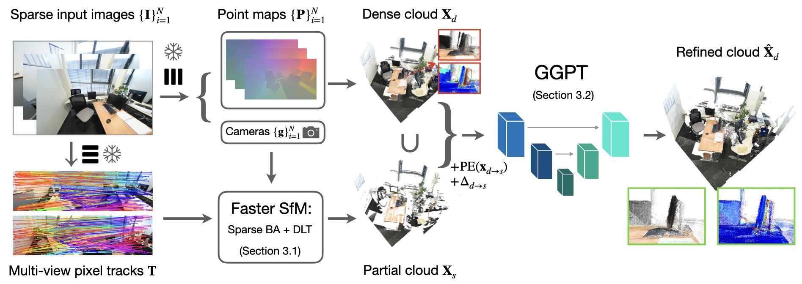

Recent feed-forward networks have achieved remarkable progress in sparse-view 3D reconstruction, but often suffer from geometry inconsistencies due to the lack of explicit multi-view constraints. To address this, we introduce the Geometry-Grounded Point Transformer (GGPT). Our framework first leverages an improved Structure-from-Motion pipeline to efficiently estimate accurate camera poses and partial 3D point clouds. Building on this, a geometry-guided 3D point transformer refines dense point maps under explicit sparse-geometry supervision. Extensive experiments show that GGPT seamlessly integrates geometric priors with dense feed-forward predictions, producing geometrically consistent and spatially complete reconstructions that generalize across architectures and datasets.
In this work, we introduce a geometry-guided framework that refines dense feed-forward reconstructions using accurate geometric guidance obtained from an improved SfM pipeline, directly in 3D space. First, we revisit sparse-view SfM and introduce an improved pipeline that integrates dense matchers with a lightweight optimisation procedure. Second, we introduce a variant of a lightweight 3D Point Transformer that jointly processes dense point maps from feed-forward models and the geometrically grounded partial point cloud from our SfM pipeline, predicting residual corrections for every dense point.

@inproceedings{chen2026ggpt,
title={GGPT: Geometry-Grounded Point Transformer},
author={Chen, Yutong and Wang, Yiming and Zhang, Xucong and Prokudin, Sergey and Tang, Siyu},
booktitle={Proceedings of the IEEE/CVF Conference on Computer Vision and Pattern Recognition (CVPR)},
year={2026}
}